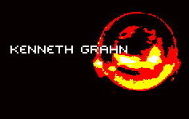

|  |
Jag kan säga några enkla ord, men jag kan inte förklara den extra dimension som webbterapin ger till tillvaron. Med hjälp av enkla och mer avancerade instrument kan den skicklige webbtherapeuten snabbt bota symptom och krämpor som har uppkommit i samband med webbsurfande. För er som vill veta detaljerna kan jag säga att teorin är baserad på den tidiga formuleringen av NLP, vars pionjär var Richard Bandler, och även på hans senaste metod som har en lite annan inriktning, som man behöver flera års erfarenhet för att ens kunna börja förstå. Jag har också utvecklat fältet med egna synteser från bl a Gregory Bateson, Marshall McLuhan och Jacques Lacan. För de snabba framsteg jag gjort inom teoretisk webbterapi tackar jag även Rasputin och Gurdjieff, ryska mystiker som helt oförtjänt fått dåligt rykte. I samtalsterapin använder jag en hypertextversion av The Last Words of Dutch Schultz och valda citat ur Mason & Dixon. |
När du stiger in i mitt kontor, märker du att det inte ser ut som ett vanligt kontor, det finns inga stolar, inga bord, inga fula planscher av solnedgångar på väggarna... Jag vill erbjuda en helhetsupplevelse för mina patienter, visst skall dom ha valuta för pengarna. En tråkig nödvändighet med webbterapi är att det kräver vissa intensiva analysmetoder. Exempelvis kan radiografi och PET scans komma på tapeten, dyrbara metoder som dock ger resultat. Ibland har jag blivit tvungen att analysera en patients ämnesomsättning med hjälp av radioaktivmärkt DMSO som appliceras på klickfingret. Som ni märker är webbterapi en verklig tvärvetenskaplig och cutting-edge disciplin som inte skäms för att gå mellan kunskapsgillena. Så det är bara att plocka fram checkhäftet och komma till min klinik om ni känner att ni har ett problem som ni vill "deala" med. Kenneth Grahn. |
uppdaterad i januari 99 |